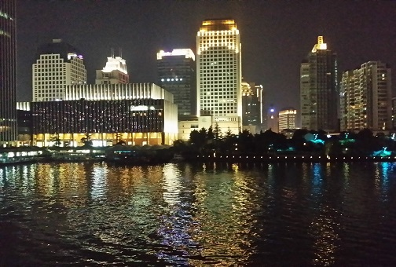

杭州
萧山跨湖桥遗址的发掘证实了早在8000年前就有人类在此繁衍生息，距今5000年前的余杭良渚文化被誉为“文明的曙光”。杭州在周朝以前，属“扬州之域”。传说在夏禹治水时，全国分为九州，长江以南的广阔地域均泛称扬州。公元前21世纪，夏禹南巡，大会诸侯于会稽（今绍兴），曾乘舟航行经过这里，并舍其杭（“杭”是方舟）于此，故名“余杭”。一说，禹至此造舟以渡，越人称此地为“禹杭”，其后，口语相传，讹“禹”为“余”，乃名“余杭”。春秋时，吴越两国争霸，杭州先属越，后属吴，越灭吴后，复属越。战国时，楚灭越国，杭州又归入楚。

杭州有着江、河、湖、山交融的自然环境。全市丘陵山地占总面积的65.6%，平原占26.4%，江、河、湖、水库占8%，世界上最长的人工运河—京杭大运河和以大涌潮闻名的钱塘江穿过。
杭州处于亚热带季风区，属于亚热带季风气候，四季分明，雨量充沛。全年平均气温17.8℃，平均相对湿度70.3%，年降水量1454毫米，年日照时数1765小时。夏季气候炎热，湿润，是新四大火炉之一。 相反，冬季寒冷，干燥。春秋两季气候宜人，是观光旅游的黄金季节。
杭州地处长江三角洲南沿和钱塘江流域，地形复杂多样。杭州市西部属浙西丘陵区，主干山脉有天目山等。东部属浙北平原，地势低平，河网密布，湖泊密布，物产丰富，具有典型的“江南水乡”特征。
返回 |